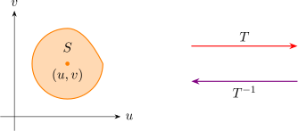
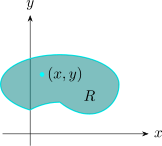
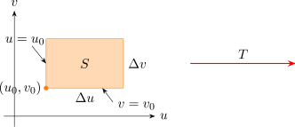
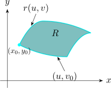
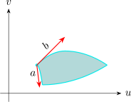
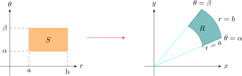
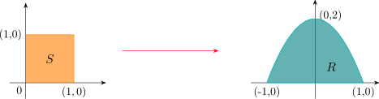
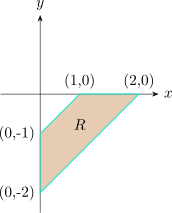
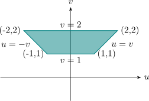

3.13 Change of Variables
In one variable, a substitution \(x = g(u)\) changes \(\int f(x)\,dx\) into \(\int f(g(u))g'(u)\,du\). For double integrals, polar coordinates are already an example: \[\iint \limits _R f(x,y)\,dA = \iint \limits _S f(r\cos \theta , r \sin \theta )\, r\,dr\,d\theta ,\] where \(S\) is the region in the \(r\theta \)-plane that corresponds to the region \(R\) in the \(xy\)-plane. More generally, consider a change of variables given by a transformation \(T\) from the \(uv\)-plane to the \(xy\)-plane, \[T(u,v) = (x,y),\qquad x = g(u,v),\quad y = h(u,v),\] also written \(x = x(u,v)\), \(y = y(u,v)\). We assume that \(T\) is a \(C^1\) transformation, meaning that \(g\) and \(h\) have continuous first partial derivatives.
|  |  |
The transformation carries a region \(S\) of the \(uv\)-plane onto a region \(R\) of the \(xy\)-plane, the image of \(S\), consisting of the images of all points of \(S\). If \(T\) is one-to-one, it has an inverse \(T^{-1}\) from the \(xy\)-plane to the \(uv\)-plane, \(u = G(x,y)\), \(v = H(x,y)\).
To see how \(T\) changes area, consider a small rectangle in \(S\) with corner \((u_0,v_0)\) and sides \(\Delta u\) and \(\Delta v\). Its image is a region of \(R\) bounded by the images of the lines \(u = u_0\) and \(v = v_0\).
|  |  |
The position vector of the image of \((u,v)\) is \(\mathbf r(u,v) = g(u,v)\,\mathbf i + h(u,v)\,\mathbf j\), and the tangent vectors to the image curves at \((x_0,y_0) = T(u_0,v_0)\) are \[\mathbf r_u = g_u(u_0,v_0)\,\mathbf i + h_u(u_0,v_0)\,\mathbf j = \frac {\partial x}{\partial u}\,\mathbf i + \frac {\partial y}{\partial u}\,\mathbf j ,\qquad \mathbf r_v = \frac {\partial x}{\partial v}\,\mathbf i + \frac {\partial y}{\partial v}\,\mathbf j .\]

The image region is approximately the parallelogram spanned by the secant vectors \(\mathbf a = \mathbf r(u_0 + \Delta u, v_0) - \mathbf r(u_0,v_0)\) and \(\mathbf b = \mathbf r(u_0, v_0 + \Delta v) - \mathbf r(u_0,v_0)\). Since \[\mathbf r_u = \lim _{\Delta u \to 0} \frac {\mathbf r(u_0 + \Delta u, v_0) - \mathbf r(u_0,v_0)}{\Delta u},\] we have \(\mathbf a\approx \Delta u\,\mathbf r_u\), and likewise \(\mathbf b\approx \Delta v\,\mathbf r_v\). So the area of the image is about the area of the parallelogram spanned by \(\Delta u\,\mathbf r_u\) and \(\Delta v\,\mathbf r_v\), \[|(\Delta u\,\mathbf r_u) \times (\Delta v\,\mathbf r_v)| = |\mathbf r_u \times \mathbf r_v|\,\Delta u \,\Delta v ,\] where \[\mathbf r_u \times \mathbf r_v = \begin {vmatrix} \mathbf i & \mathbf j & \mathbf k\\[1ex] \frac {\partial x}{\partial u} & \frac {\partial y}{\partial u} & 0\\[1ex] \frac {\partial x}{\partial v} & \frac {\partial y}{\partial v} & 0 \end {vmatrix} = \begin {vmatrix} \frac {\partial x}{\partial u} & \frac {\partial x}{\partial v}\\[1ex] \frac {\partial y}{\partial u} & \frac {\partial y}{\partial v} \end {vmatrix}\mathbf k .\]
Definition 3.13.1. Let \(T\) be the transformation \(x = g(u,v)\), \(y = h(u,v)\). Its Jacobian is the determinant \[\frac {\partial (x,y)}{\partial (u,v)} = J(u,v) = \begin {vmatrix} \frac {\partial x}{\partial u} & \frac {\partial x}{\partial v}\\[1ex] \frac {\partial y}{\partial u} & \frac {\partial y}{\partial v} \end {vmatrix} = \frac {\partial x}{\partial u}\frac {\partial y}{\partial v} - \frac {\partial x}{\partial v}\frac {\partial y}{\partial u} .\]
The Jacobian is the two-variable answer to a question already familiar from one variable. In the substitution \(\int f(x)\,dx = \int f(g(u))g'(u)\,du\) the factor \(g'(u)\) appears because a small interval \(\Delta u\) is stretched into an interval of length roughly \(|g'(u)|\,\Delta u\). In the plane a small rectangle \(\Delta u\,\Delta v\) is carried by \(T\) into a small parallelogram, and the factor by which its area is stretched is the absolute value of the Jacobian: \[\Delta A \approx \left |\frac {\partial ( x,y)}{\partial (u,v)}\right | \Delta u\, \Delta v ,\] the Jacobian being evaluated at \((u_0,v_0)\). It is an area magnification factor, and nothing more mysterious than that. Its sign records whether \(T\) preserves or reverses orientation, which is why the absolute value is taken.
Summing over the rectangles of a partition of \(S\), \[\iint \limits _R f(x,y)\, dA \approx \sum ^m_{i=1}\sum ^n_{j = 1} f(x_i , y_j)\, \Delta A \approx \sum ^m_{i=1}\sum ^n_{j = 1}f(g(u_i,v_j), h(u_i,v_j)) \left |\frac {\partial ( x,y)}{\partial (u,v)}\right |\, \Delta u \,\Delta v ,\] and the right-hand side is a Riemann sum for an integral over \(S\). Passing to the limit gives the result the whole construction was for.
Theorem 3.13.2 (Change of variables in a double integral). Let \(T\) be a one-to-one \(C^1\) transformation carrying a region \(S\) in the \(uv\)-plane onto a region \(R\) in the \(xy\)-plane, and suppose \(J(u,v)\neq 0\) on \(S\), except perhaps on its boundary. Then for \(f\) continuous on \(R\), \[\iint \limits _R f(x,y)\,dx\,dy = \iint \limits _S f(g(u,v),h(u,v))\,|J(u,v)|\, du\, dv .\]
The condition \(J\neq 0\) is not decoration: where the Jacobian vanishes the transformation collapses area, and the formula has nothing to say.
Example 3.13.3. Show that integration in polar coordinates is the special case \(x = r\cos \theta \), \(y = r\sin \theta \).
Solution. \[J(r,\theta ) = \begin {vmatrix} \frac {\partial x}{\partial r} & \frac {\partial x}{\partial \theta }\\[1ex] \frac {\partial y}{\partial r} & \frac {\partial y}{\partial \theta } \end {vmatrix} = \begin {vmatrix} \cos \theta & - r \sin \theta \\ \sin \theta & r \cos \theta \end {vmatrix} = r \cos ^2 \theta + r \sin ^2 \theta = r .\] Since \(r\geq 0\) the absolute value may be dropped, and Theorem 3.13.2 gives \[\iint \limits _R f(x,y)\, dx\,dy = \iint \limits _S f( r\cos \theta , r \sin \theta )\left |\frac {\partial (x,y)}{\partial (r, \theta )}\right | dr\, d\theta = \iint \limits _S f( r\cos \theta , r \sin \theta )\, r\, dr\, d\theta .\] The familiar extra \(r\) in polar integration is therefore not a rule to be memorised. It is this Jacobian, and it says that a polar rectangle of sides \(\Delta r\) and \(\Delta \theta \) has area about \(r\,\Delta r\,\Delta \theta \) — the further from the origin, the more area the same change of angle sweeps out. The transformation carries the rectangle \(S = [a,b]\times [\alpha ,\beta ]\) of the \(r\theta \)-plane onto the polar rectangle \(R\).

Example 3.13.4. Use the change of variables \(x = u^2 - v^2\), \(y = 2uv\) to evaluate \(\iint _R y\,dA\), where \(R\) is the region bounded by the \(x\)-axis and the parabolas \(y^2 = 4 - 4x\) and \(y^2 = 4 + 4x\), \(y\geq 0\).

Solution. The transformation sends the sides of the unit square \(S = [0,1]\times [0,1]\) to the boundary of \(R\): \(v = 0\) gives the segment \(0\leq x\leq 1\) of the \(x\)-axis; \(u = 1\) gives \(x = 1 - v^2\), \(y = 2v\), which is the parabola \(y^2 = 4 - 4x\); \(v = 1\) gives \(x = u^2 - 1\), \(y = 2u\), the parabola \(y^2 = 4 + 4x\); and \(u = 0\) gives the segment \(-1\leq x\leq 0\). So \(T(S) = R\), and \(S\) is a much easier region than \(R\). The Jacobian is \[\frac {\partial (x,y)}{\partial (u,v)} = \begin {vmatrix} 2u & -2v\\ 2v & 2u\end {vmatrix} = 4u^2 + 4v^2 >0 ,\] so \[\iint \limits _R y\,dA = \int ^1_0\int ^1_0 2uv\,(4u^2 + 4v^2)\,du\,dv = \int ^1_0\int ^1_0 (8u^3v + 8uv^3)\,du\,dv = 8\left (\frac 18 + \frac 18\right ) = 2 .\] As a check, directly \(R\) is the type II region \(\frac {y^2}{4} - 1\leq x\leq 1 - \frac {y^2}{4}\), \(0\leq y\leq 2\), and \(\int _0^2 y\left (2 - \frac {y^2}{2}\right )dy = 4 - 2 = 2\).
Example 3.13.5. Evaluate \(\iint _R e^{(x+y)/(x-y)}\,dA\), where \(R\) is the trapezoidal region with vertices \((1,0)\), \((2,0)\), \((0,-2)\) and \((0,-1)\).

Solution. The integrand suggests \(u = x + y\) and \(v = x - y\). This defines \(T^{-1}\), from the \(xy\)-plane to the \(uv\)-plane; solving, \(T\) is \[x = \frac {1}{2}(u+ v),\qquad y = \frac {1}{2}(u- v) .\] The sides of \(R\) lie on \(y = 0\), \(x - y = 2\), \(x = 0\) and \(x - y = 1\), which become \(u = v\), \(v = 2\), \(u = -v\) and \(v = 1\). So the image is the trapezoid \[S = \{ (u,v) \mid 1\leq v \leq 2,\ -v \leq u \leq v\} .\]

The Jacobian of \(T\) is \(\begin {vmatrix} \frac 12 & \frac 12\\ \frac 12 & -\frac 12\end {vmatrix} = -\frac 12\), so \(|J| = \frac 12\) and \begin {align*} \iint \limits _R e^{(x+y)/(x-y)}\,dA & = \int ^2_1 \int ^v_{-v} e^{u/v}\, \frac {1}{2}\, du\, dv = \frac {1}{2}\int ^2_1 \Big [ve^{u/v}\Big ]_{u=-v}^{u=v}dv\\ & = \frac {1}{2}( e - e^{-1})\int ^2_1 v \,dv = \frac {3}{4}( e - e^{-1})\approx 1.763 . \end {align*}
Triple Integrals
For a transformation \(x = x(u,v,w)\), \(y = y(u,v,w)\), \(z = z(u,v,w)\) of space, the same argument with parallelepipeds in place of parallelograms gives \[\iiint \limits _R f(x,y,z)\,dV = \iiint \limits _S f\big (x(u,v,w), y(u,v,w), z(u,v,w)\big )\left |\frac {\partial (x,y,z)}{\partial (u,v,w)}\right |du\,dv\,dw .\]
Exercise 3.13.6. Derive the formula for triple integration in spherical coordinates by computing the Jacobian \[J(\rho , \theta , \phi )=\begin {vmatrix} \frac {\partial x}{\partial \rho } & \frac {\partial x}{\partial \theta } & \frac {\partial x}{\partial \phi }\\[1ex] \frac {\partial y}{\partial \rho } & \frac {\partial y}{\partial \theta } & \frac {\partial y}{\partial \phi }\\[1ex] \frac {\partial z}{\partial \rho } & \frac {\partial z}{\partial \theta } & \frac {\partial z}{\partial \phi } \end {vmatrix} .\]
Answer: Expanding along the last row, \((\cos \phi , 0, -\rho \sin \phi )\), gives \(J = -\rho ^2\sin \phi \), so \(|J| = \rho ^2\sin \phi \) (since \(0\leq \phi \leq \pi \)) and \(dV = \rho ^2\sin \phi \,d\rho \,d\theta \,d\phi \), as in Theorem 3.10.1.
Example 3.13.7. Use the transformation \(x = au\), \(y = bv\) to find the area of the ellipse \(\frac {x^2}{a^2} + \frac {y^2}{b^2}\leq 1\), and the volume of the ellipsoid \(\frac {x^2}{a^2} + \frac {y^2}{b^2} + \frac {z^2}{c^2}\leq 1\).
Solution. The transformation carries the unit disc \(u^2 + v^2\leq 1\) onto the ellipse, and its Jacobian is \(\begin {vmatrix} a & 0\\ 0 & b\end {vmatrix} = ab\). So the area is \(\iint _{u^2+v^2\leq 1}ab\,du\,dv = \pi ab\). In the same way \(x = au\), \(y = bv\), \(z = cw\) carries the unit ball onto the ellipsoid with Jacobian \(abc\), so its volume is \(\frac 43\pi abc\).
Example 3.13.8. Evaluate \(\iint _R (x + y)^2\,dA\), where \(R\) is the square with vertices \((0,0)\), \((1,1)\), \((2,0)\) and \((1,-1)\).
Solution. The sides lie on \(x + y = 0\), \(x + y = 2\), \(x - y = 0\) and \(x - y = 2\), so put \(u = x + y\), \(v = x - y\); then \(S = [0,2]\times [0,2]\). Here \(\frac {\partial (u,v)}{\partial (x,y)} = -2\), so \(\left |\frac {\partial (x,y)} {\partial (u,v)}\right | = \frac 12\) by the inverse property of Jacobians, and \[\iint \limits _R (x + y)^2\,dA = \int _0^2\int _0^2 u^2\cdot \frac 12\,du\,dv = \frac 12\cdot \frac 83\cdot 2 = \frac 83 .\]
Questions on this section
Stuck on something here? Ask below and it stays attached to this topic.